· EEM214
EEM214 Elektronik I: 2008 Ara Sınav Cevap Anahtarı, Quiz Çözümleri ve Çalışma Soruları
EEM214 – Elektronik I · 11.04.2008 · 17.10.2026
Bu yazı, EEM214 Elektronik I dersinin "sınav" klasöründe bulunan taranmış sayfaları bir araya getiriyor: Spring 2007–08 dönemine ait ara sınavın (11 Nisan 2008, dört soru) el yazısıyla cevaplanmış anahtarı, laboratuvarda yapılan bir quizin iki grubunun çözümü, başka bir quizin iki grubunun çözümü ve iki çalışma sorusu. Sorular ve çözümlerin ana adımları metin olarak yazıldı; taranmış sayfalar da görsel olarak eklendi. Sayfaların orijinalleri yazının sonunda ZIP olarak indirilebilir.
Ara sınav (Nisan 2008)
Sınavla birlikte verilen Useful Material sayfası: k = 1.38 × 10⁻²³ J/K = 8.62 × 10⁻⁵ eV/K, q = 1.6 × 10⁻¹⁹ C, oda sıcaklığında kT = 0.0259 eV, n_i = 10¹⁰ cm⁻³ (300 K), h = 6.626 × 10⁻³⁴ J·s, c = 3 × 10⁸ m/s; bant aralıkları: karbon 5.47, silisyum 1.12, germanyum 0.66, galyum arsenit 1.42 eV; n_i² = BT³e^(−E_g/kT); N_D > N_A için n = [(N_D − N_A) + √((N_D − N_A)² + 4n_i²)]/2 (p için simetrik); n = n_i·e^((E_F − E_i)/kT), p = n_i·e^((E_i − E_F)/kT); f(E) = 1/(1 + e^((E − E_F)/kT)); qV₀ = kT·ln(N_aN_d/n_i²); süreklilik denklemleri ∂p/∂t = −(1/q)∂J_p/∂x − δp/τ_p ve ∂n/∂t = (1/q)∂J_n/∂x − δn/τ_n.
Q.1 (30 puan): Işıkla aydınlatılan sonsuz Si çubuk
Sonsuz bir yarıiletken çubuğun x ≤ 0 kısmı ışıkla aydınlatılıyor ve x < 0 bölgesinde düzgün olarak g_op = 10¹⁵ elektron–delik çifti/cm³·s üretiliyor; x > 0'da g_op = 0. Çubuk Si, N_D = 10¹⁸ cm⁻³ ile düzgün katkılı, τ_p = 10⁻⁶ s, T = 300 K, D_p = 3 cm²/s, kararlı durum.
- a) x = −∞'da toplam delik yoğunluğu: p₀ = n_i²/N_D = 10² cm⁻³. Kararlı durumda ve düzgün aydınlatmada ∂²δp/∂x² = 0 olduğundan 0 = −δp/τ_p + g_op ⇒ δp(−∞) = τ_p·g_op = 10⁻⁶ × 10¹⁵ = 10⁹ cm⁻³; p(−∞) = 10² + 10⁹ ≅ 10⁹ cm⁻³.
- b) x = +∞'da: x > 0'da optik uyarım yok; fazla delikler x = 0'dan sağa doğru difüze olurken yeniden birleşmeyle kaybolur, x → ∞'da fazla delik yoğunluğu sıfır: p(+∞) = p₀ = 10² cm⁻³.
- c) Düşük düzey enjeksiyon var mı? x ≤ 0'da δp = δn = 10⁹ cm⁻³ << 10¹⁸ cm⁻³; evet, düşük düzey enjeksiyon koşulu sağlanıyor.
- d) δp(x) ifadesi: Alan yok, düzgün katkılı ve düşük düzey enjeksiyon olduğundan sürüklenme akımı sıfır. x ≤ 0'da δp = g_op·τ_p = 10⁹ cm⁻³. x > 0'da D_p·∂²δp/∂x² = δp/τ_p ⇒ δp(x) = A·e^(x/L_p) + B·e^(−x/L_p); δp(∞) = 0 ⇒ A = 0, δp(0⁺) = Δp ⇒ B = Δp: δp(x) = 10⁹·e^(−x/L_p) cm⁻³ (L_p = √(D_pτ_p)). Grafikte x ≤ 0'da sabit 10⁹, x > 0'da üstel azalma.
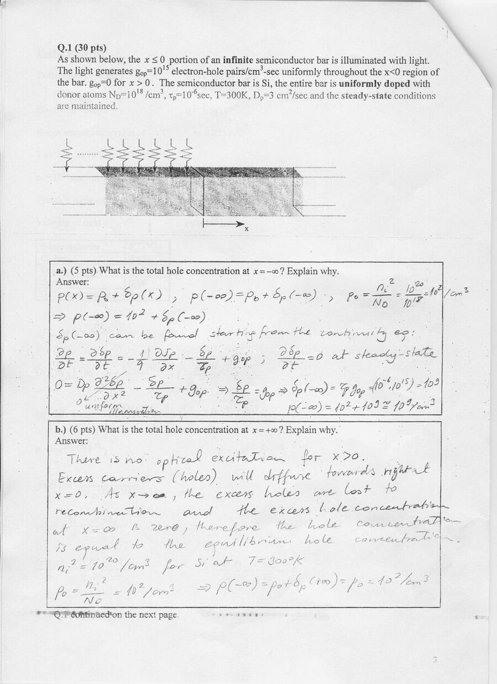
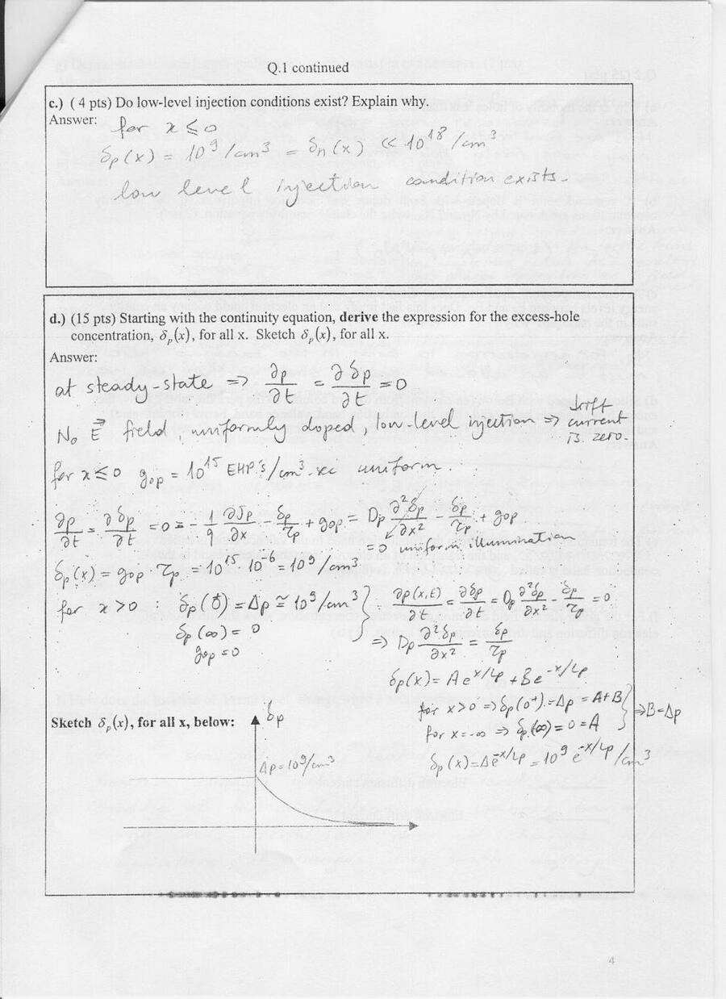
Q.2 (25 puan): Kısa sorular
- a) Deliklerin hareketliliği neden elektronlarınkinden düşüktür? Cevap: delik hareketi elektronların bağdan bağa geçmesinin sonucudur; elektronlar daha serbest hareket eder.
- b) Hem donör hem akseptör katkılı yarıiletkende yük nötrlüğü: 0 = q(−n − N_A + p + N_D).
- c) Oda sıcaklığında Fermi–Dirac dağılımı E_F ile E_C arasında sıfırdan farklı değerler alır; bu, bir elektronun bant aralığındaki bir durumu işgal edebileceği anlamına gelir mi? Cevap: hayır; bant aralığında elektron bulunması için orada izinli bir enerji durumu olmalı.
- d) Bor katkılı silisyumun bant diyagramı: E_F, E_i'nin altında, değerlik bandına yakın.
- e) İletim bandından değerlik bandına geçiş yeniden birleşme (recombination), tersi üretim (generation).
- f) Verilen E(x) yönü ve n(x) eğimi için elektron difüzyon ve sürüklenme akımlarının yönleri.
- g) Difüzyon uzunluğu: bir elektronun ya da deliğin yeniden birleşmeden önce difüze olabildiği ortalama mesafe.
- h) Boşaltılmış bölge: elektronlar n'den p'ye, delikler p'den n'ye difüze olarak geride iyonlaşmış donör ve akseptör atomları bırakır; bu sabit yükler boşaltılmış bölgeyi ve bir elektrik alanı oluşturur.
- i) Sıfır kutuplamada dengede difüzyon akımı sürüklenme akımına eşit olduğundan net akım sıfırdır.
- j) Sıcaklık artınca elektron–delik çifti üretimi ve azınlık taşıyıcılar artar, sürüklenme akımına katkı yaparak ters doyma akımını artırır.
- k) Zener kırılması hafif katkılı diyotlarda olmaz; yoğun katkılı diyotlarda olur.
- l) Isıtılınca Fermi seviyesi nasıl değişir? Cevap anahtarında "Fermi–Dirac dağılımı değişir ama Fermi seviyesi sıcaklıkla değişmez, yalnız katkıyla değişir" yazılmış.
Not: Q.2 l'deki cevap katkılı yarıiletken için doğru değildir: sıcaklık arttıkça n_i hızla büyür ve E_F − E_i = kT·ln(n/n_i) küçülür; yani Fermi seviyesi içsel seviyeye (E_i) doğru yaklaşır, çok yüksek sıcaklıkta yarıiletken içsel gibi davranır. Yalnızca içsel yarıiletkende E_F yaklaşık olarak bant aralığının ortasında kalır.
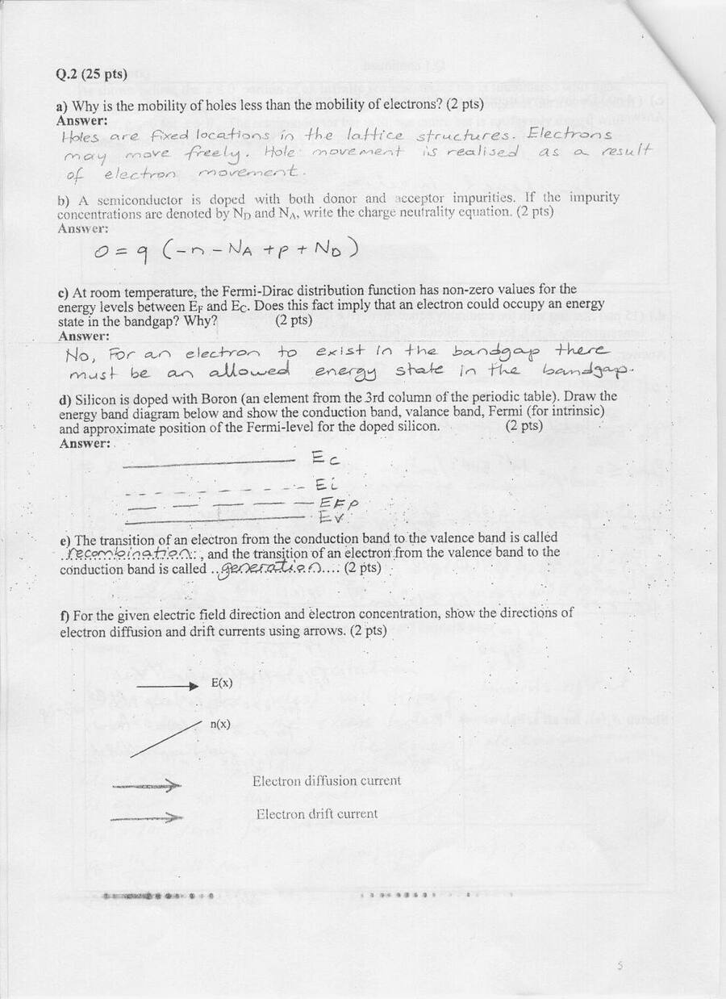
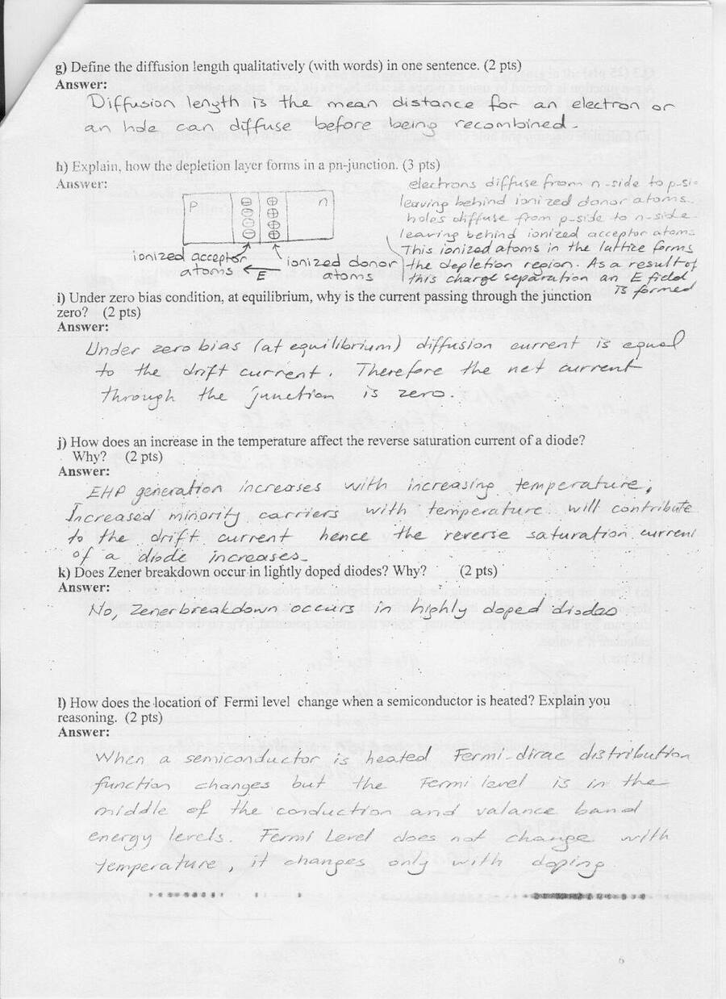
Q.3 (25 puan): p-n eklemi
p tipi Si N_A = 5 × 10¹⁷ cm⁻³ ve n tipi Si N_D = 10¹⁶ cm⁻³ ile bir p-n eklemi, 300 K, n_i = 10¹⁰ cm⁻³.
- a) n bölgesinde n_n ≅ 10¹⁶ cm⁻³, p_n = 10²⁰/10¹⁶ = 10⁴ cm⁻³; p bölgesinde p_p ≅ 5 × 10¹⁷ cm⁻³, n_p = 10²⁰/(5 × 10¹⁷) = 200 cm⁻³.
- b) E_Fn − E_in = kT·ln(n_n/n_i) = 0.0259·ln(10⁶) = 0.3578 eV; E_ip − E_Fp = kT·ln(p_p/n_i) = 0.0259·ln(5 × 10⁷) = 0.459 eV; dengede E_Fn = E_Fp = E_F.
- c) Boşaltılmış bölge, yük yoğunluğu, elektrik alan, potansiyel ve bant diyagramı çizimleri; qV₀ = 0.459 + 0.3578 = 0.8168 eV (ya da V₀ = (kT/q)·ln(N_AN_D/n_i²) = 0.0259·ln(5 × 10¹⁷ × 10¹⁶ / 10²⁰) ≅ 0.8169 V).
- d) Tablo: delik difüzyonu ve elektron sürüklenmesi parçacık akışı p'den n'ye (→), delik sürüklenmesi ve elektron difüzyonu parçacık akışı n'den p'ye (←); akım yönleri: delik difüzyonu →, delik sürüklenmesi ←, elektron difüzyonu →, elektron sürüklenmesi ←.
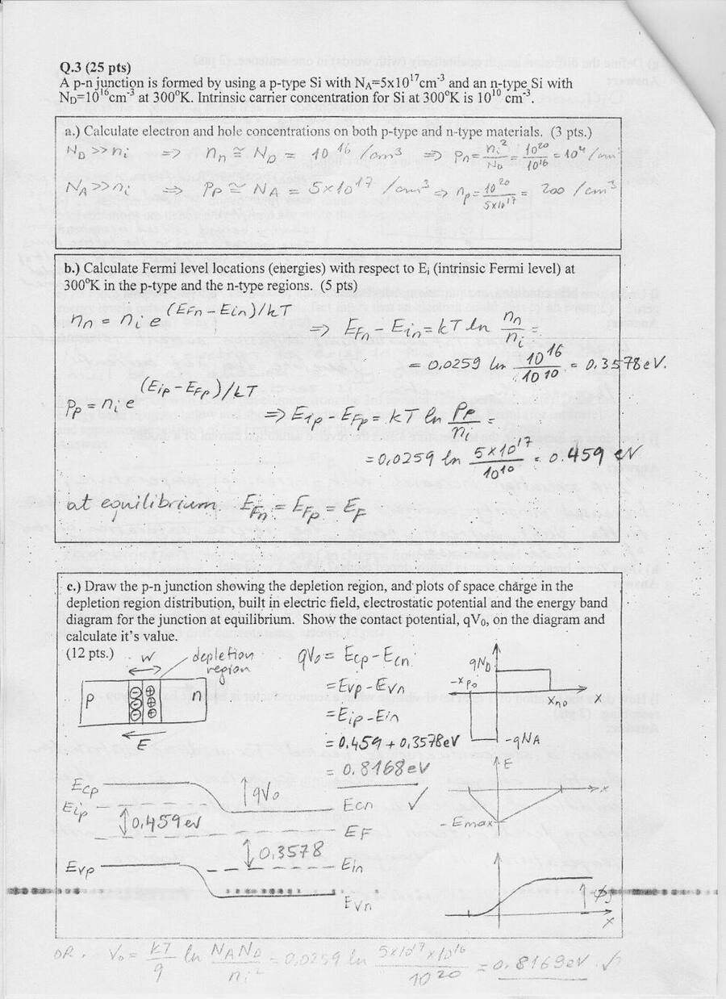
Q.4 (20 puan): Diyot ve Zener'li transfer karakteristiği
1 kΩ seri dirençli devrede çıkışa paralel iki kol var: bir diyot ve ona ters seri bağlı bir Zener, ve seri iki diyot. Diyotların iletim gerilimi 1 V, Zener gerilimi 5 V.
- a) Transfer karakteristiği: −6 V < V_in < 2 V arasında V_out = V_in; V_in > 2 V için V_out = 2 V (iki diyot), V_in < −6 V için V_out = −6 V (diyot + Zener).
- b) Üçgen dalga girişini +3 V ve −1 V'ta kırpmak için devre: −1 V için tek ters diyot, +3 V için seri üç diyot.
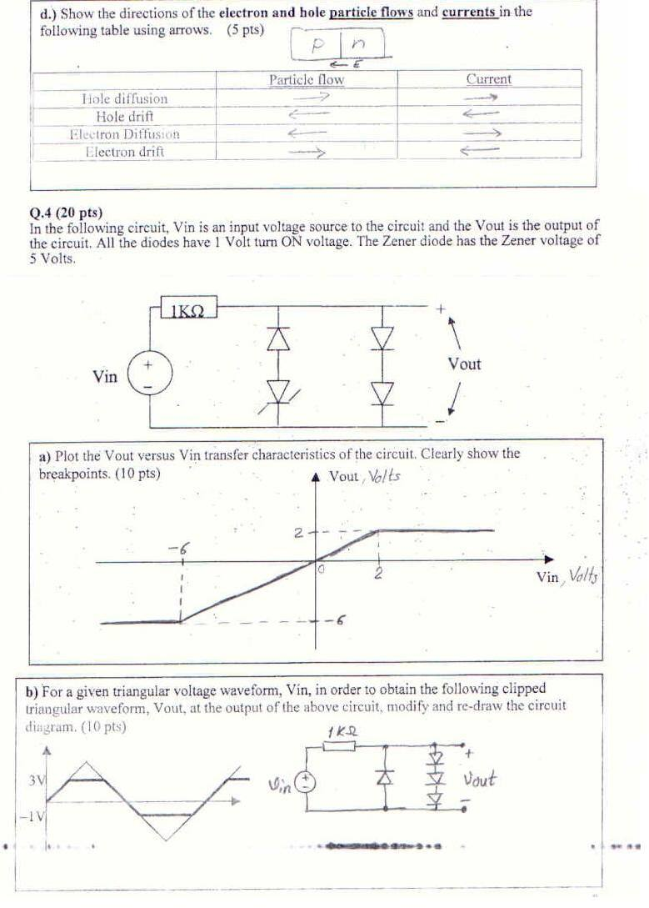
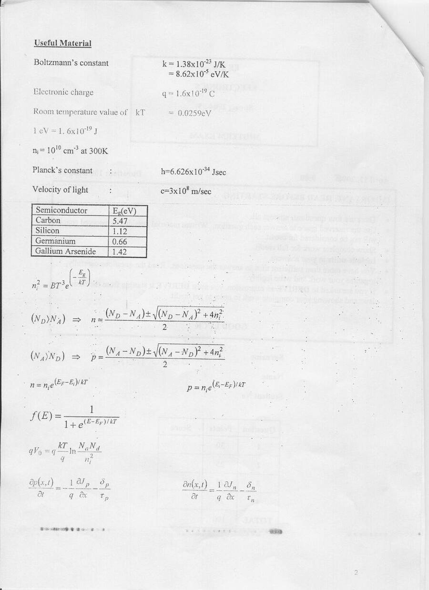
Laboratuvar quizi (Grup I ve II)
EEM-214 Elektronik Laboratuvarı Quiz-1 kâğıtlarının üzerine yazılmış çözümler:
- Grup I: V_i = 20 V, R = 1 kΩ, V_Z = 10 V ve R_L = 4 kΩ'luk Zener regülatörü. i_L = 10 V / 4 kΩ = 2.5 mA, i_R = (20 − 10)/1 kΩ = 10 mA, i_Z = 10 − 2.5 = 7.5 mA, P_Z = 10 V × 7.5 mA = 75 mW.
- Grup II: Anotları V_o düğümüne bağlı iki Si diyot (V_diyot = 0.7 V), V_o 1 kΩ üzerinden +5 V'a bağlı. V₁ = V₂ = 0 V: V_o = 0.7 V, I_o = (5 − 0.7)/1 kΩ = 4.3 mA; girişlerden biri 10 V iken o diyot ters kutuplanır, sonuç aynı (0.7 V, 4.3 mA); ikisi de 10 V iken iki diyot da kesimde, V_o = 5 V, I_o = 0. Tablo mantık seviyelerine çevrilince devre VE (AND) kapısı gibi çalışıyor.
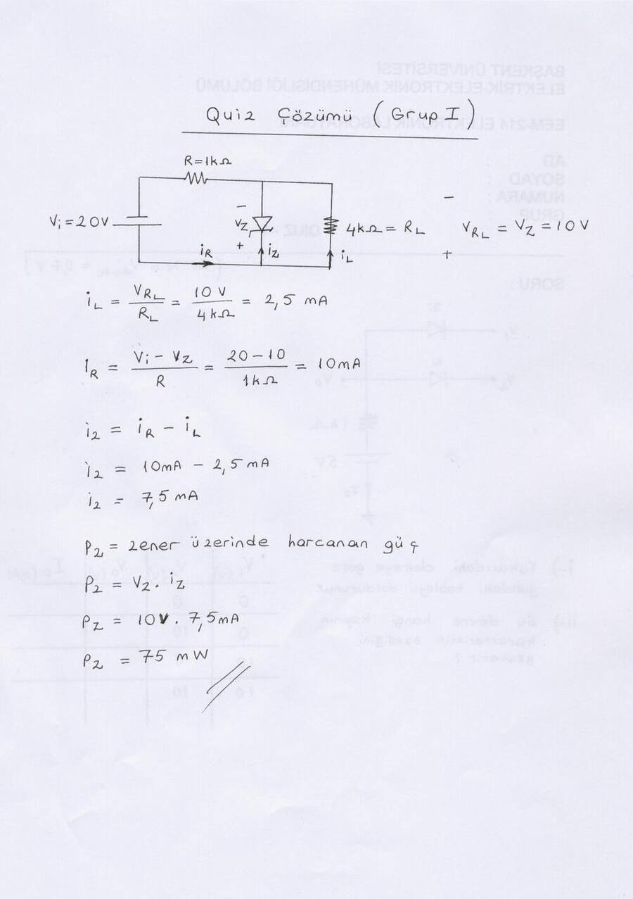
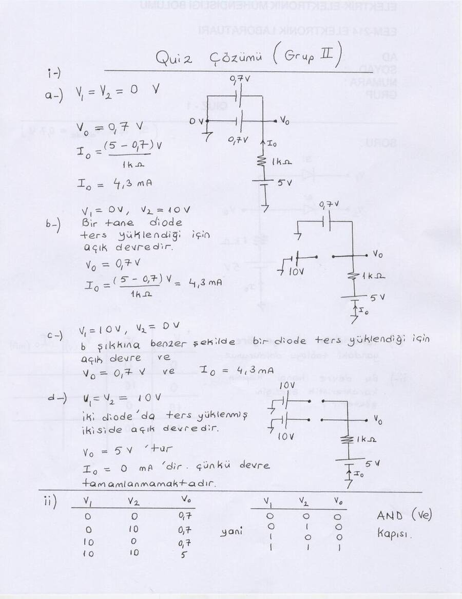
Quiz I (Grup 3 ve 4)
Diyot durumlarının varsay-doğrula yöntemiyle bulunduğu iki devre:
- Grup 3: Önce iki diyot da kesimde varsayılıyor; V_D1 = 10/3 V > 0 çıktığından D1 iletimde olmalı. D1 açık, D2 kapalı varsayımıyla düğüm denklemi (V₁ − 9.3)/1k + (V₁ − 5)/1k + V₁/2k = 0 ⇒ V₁ = 5.72 V; i_D1 = 3.58 mA > 0 (D1 açık), V_D2 = −2.86 V < 0 (D2 kapalı); V_o = 2.86 V.
- Grup 4: Benzer şekilde D1 açık, D2 kapalı; (V₁ − 10)/2k + (V₁ − 5.7)/1k + V₁/8k = 0 ⇒ V₁ = 6.58 V; i_D1 = 0.885 mA, V_D2 = −0.3 V; V_o = 3.3 V.
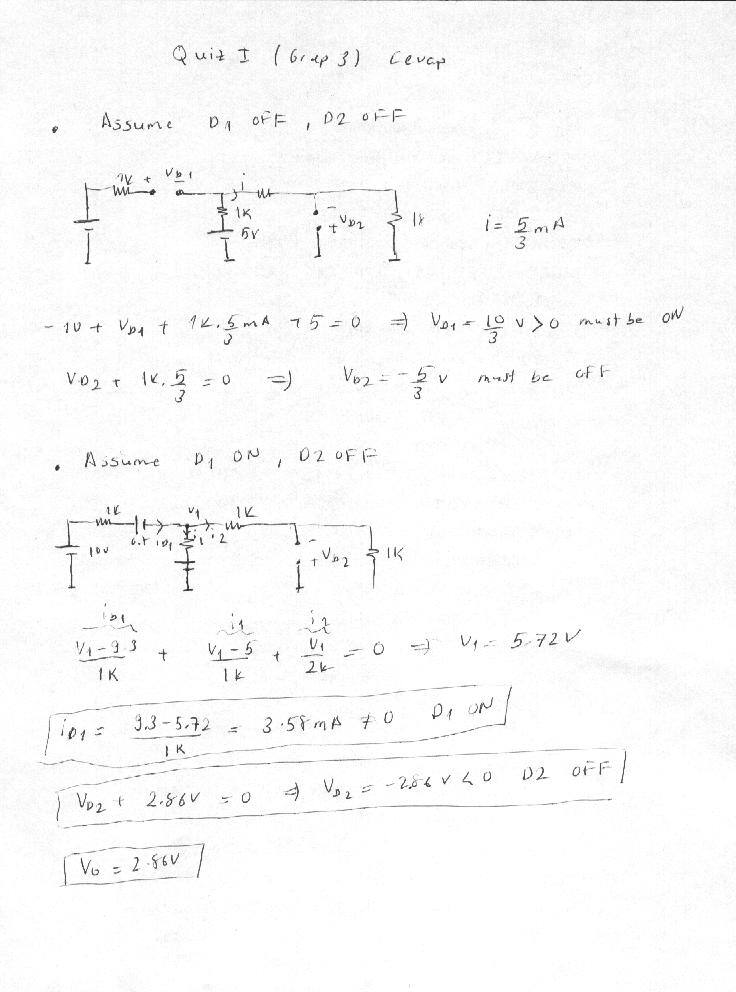
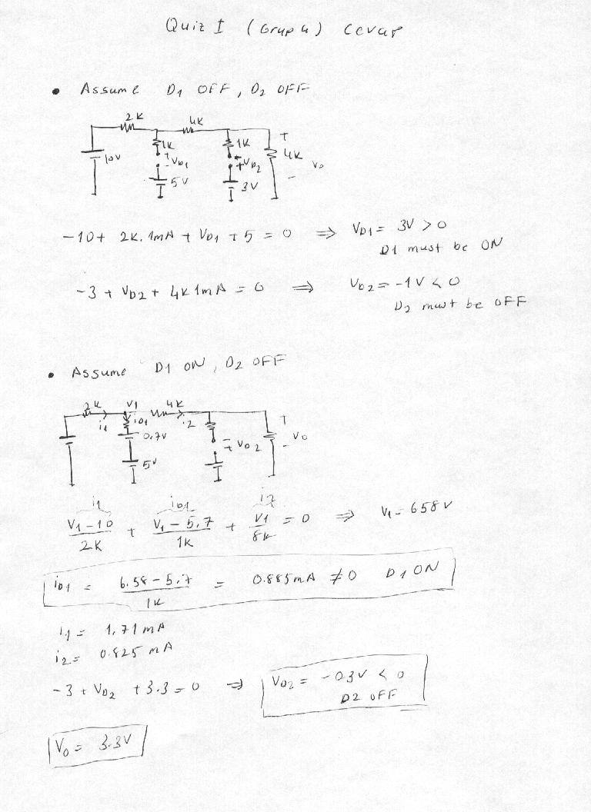
Çalışma soruları
- Yandaki devrenin (akım aynası beslemeli, iki transistörlü yükselteç) AC eşdeğer devresini çiziniz ve v_o/v_i = A_v ifadesini çıkarınız.
- Aşağıdaki devrenin (Q1–Q2 fark çifti, Q3–Q4 akım aynası aktif yükü) AC eşdeğer devresini çizerek gerilim kazancının ifadesini çıkarınız.
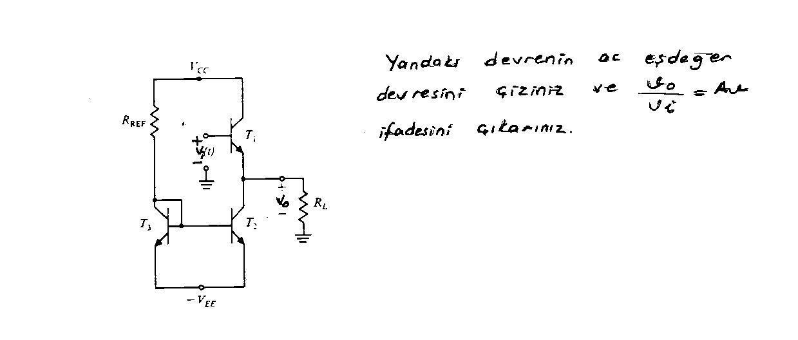
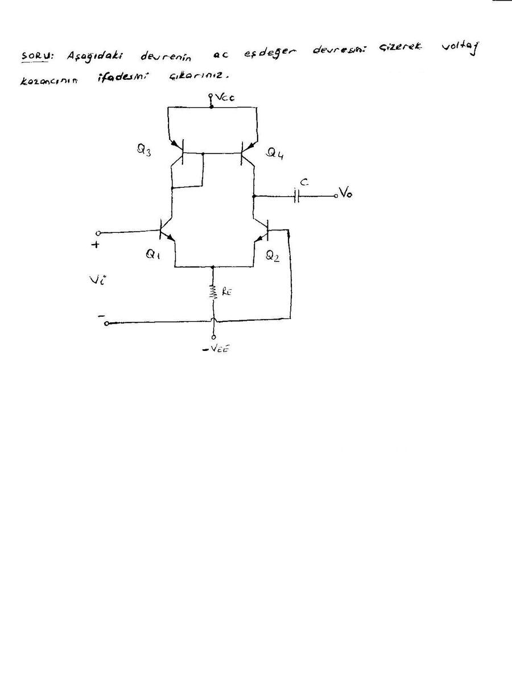
İndirme
ZIP dosyasında ara sınavın yedi, quizlerin dört taranmış sayfası ve iki çalışma sorusu görseli bulunuyor.